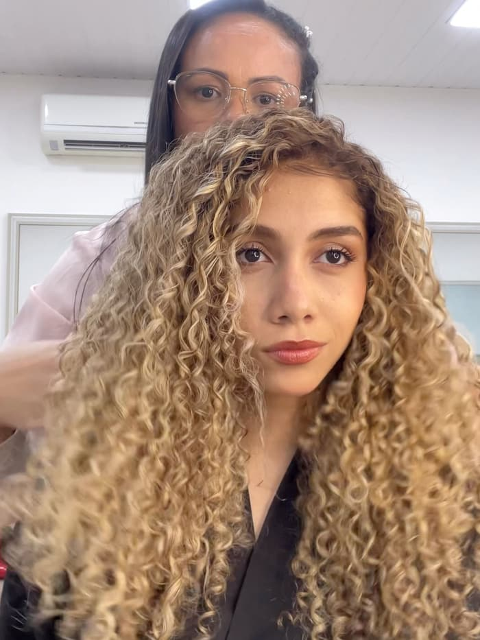
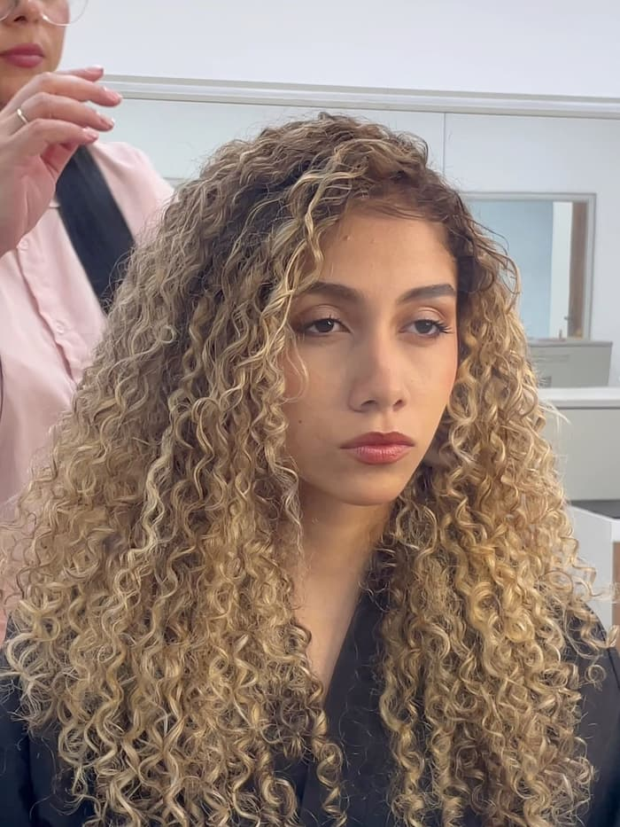
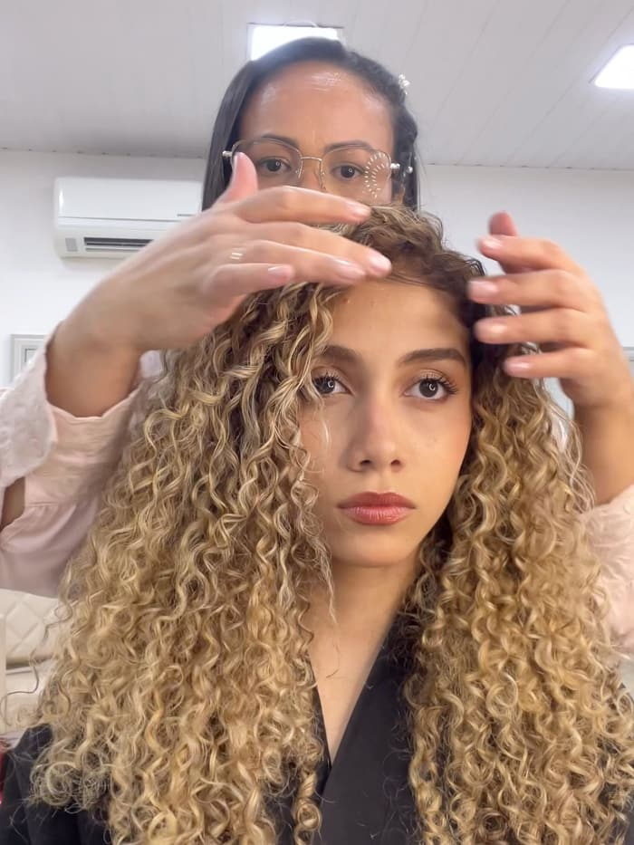
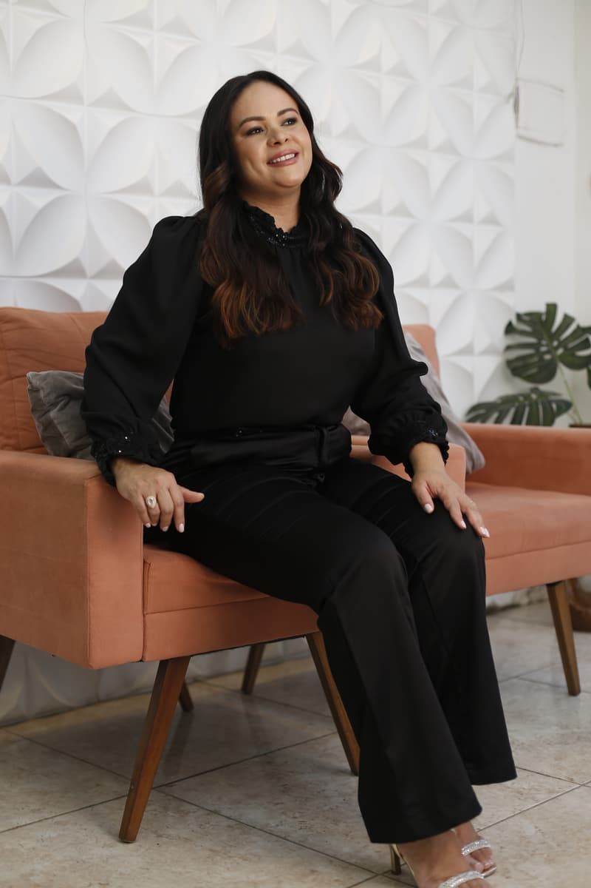

Todas as cores,
a cor certa para você.
Dos tons naturais às cores fantasia: coloração e mechas feitas sob medida por Raquel Melo, da avaliação ao acabamento.
Prazer, eu sou a Raquel.
Sou cabeleireira e colorista. Para mim, a cor certa não é a da moda: é a que conversa com o seu tom de pele, com a sua rotina e com a saúde do seu cabelo.
Por isso, cada atendimento começa com uma conversa. Entendo o que você deseja, avalio o histórico dos seus fios e só então escolho a técnica, seja um loiro luminoso, uma morena iluminada ou mechas em cachos.
Provador de cores
Escolha uma cor e veja na hora como ela fica. Teste na Raquel, numa foto sua ou ao vivo, com a câmera.
Naturais
Fantasia
Cor escolhida: Rosa quartzo
Medindo o tom do cabelo…
Passe o dedo ou o mouse onde a cor deve pegar (Pintar) ou sair (Apagar). Em dourado, a área que recebe a cor.
A câmera e as fotos ficam só no seu aparelho: nada é enviado nem salvo.
Cachos que iluminam
Mechas em cabelo cacheado, feitas no salão: a luz entra sem desmanchar a curvatura, e os cachos ganham brilho e definição do comprimento às pontas.



Serviços
O valor de cada serviço depende do comprimento, do volume e da técnica escolhida. Peça seu orçamento pelo WhatsApp.
-
Loiros
Do mel ao platinado, com tonalização pensada para o seu tom de pele.
-
Morena iluminada
Pontos de luz sobre a base natural, para um castanho com brilho e movimento.
-
Cores fantasia
Rosa, lilás, azul, vermelho ou a cor que você imaginar, com preparo e cuidado para o fio.
-
Ruivos e acobreados
Do cobre ao vermelho intenso, tons quentes com brilho e acabamento uniforme.
-
Mechas em cabelo cacheado
Iluminação que respeita a curvatura e mantém a definição dos cachos.
-
Coloração
Cobertura de fios brancos e mudança de tom, com acabamento uniforme.
-
Tratamentos capilares
Hidratação, nutrição e reconstrução para manter os fios fortes depois da química.
-
Corte e finalização
Acabamento que valoriza a cor e o movimento natural do cabelo.
Cor sob medida, feita com técnica, calma e atenção a cada detalhe.
Como funciona o atendimento
-
Agendamento
Você chama no WhatsApp, conta o que deseja e escolhe o melhor horário.
-
Avaliação
Antes de qualquer química, a Raquel analisa o histórico, a saúde e a cor de base do seu cabelo.
-
Técnica sob medida
A técnica e os produtos são escolhidos para o seu fio, e cada etapa tem o tempo de que precisa.
-
Cuidados em casa
Você sai com orientações de manutenção e o intervalo ideal para voltar.

Perguntas frequentes
Não encontrou sua dúvida? Pergunte pelo WhatsApp.
Como faço para agendar?
Pelo WhatsApp. Conte o que você deseja e, se puder, envie uma foto do seu cabelo com luz natural: isso ajuda a Raquel a orientar você antes do atendimento.
Cabelo cacheado pode fazer mechas?
Pode. Com a técnica certa e cuidado com a fibra, a luz entra sem desmanchar a curvatura. O vídeo desta página mostra um exemplo.
Preciso fazer uma avaliação antes?
Para mudanças de cor e mechas, a avaliação é o primeiro passo: ela mostra o histórico químico e a saúde dos fios e define a técnica mais segura para o resultado que você quer.
Quanto tempo leva uma coloração ou mechas?
Depende do comprimento, do volume e do resultado desejado. Mechas costumam levar algumas horas; na avaliação você recebe a previsão para o seu caso.
Quanto tempo dura uma cor fantasia?
Cores fantasia desbotam mais rápido que os tons naturais. Com shampoo adequado, água fria e retoques, a cor dura algumas semanas; na avaliação a Raquel indica a manutenção ideal para o seu cabelo.
Como manter a cor bonita por mais tempo?
Use shampoo e condicionador para cabelos com coloração, evite água muito quente, proteja os fios do sol e do cloro e mantenha os tratamentos em dia. No fim do atendimento você recebe o intervalo ideal de retorno.
Horários e como chegar
Atendimento com hora marcada. Chame no WhatsApp, conte o que você deseja e escolha o melhor horário.
Horário de atendimento
Os horários serão publicados aqui em breve.
Atendimento somente com horário marcado
Endereço
Formas de pagamento
WhatsApp, endereço e horários serão publicados aqui em breve.